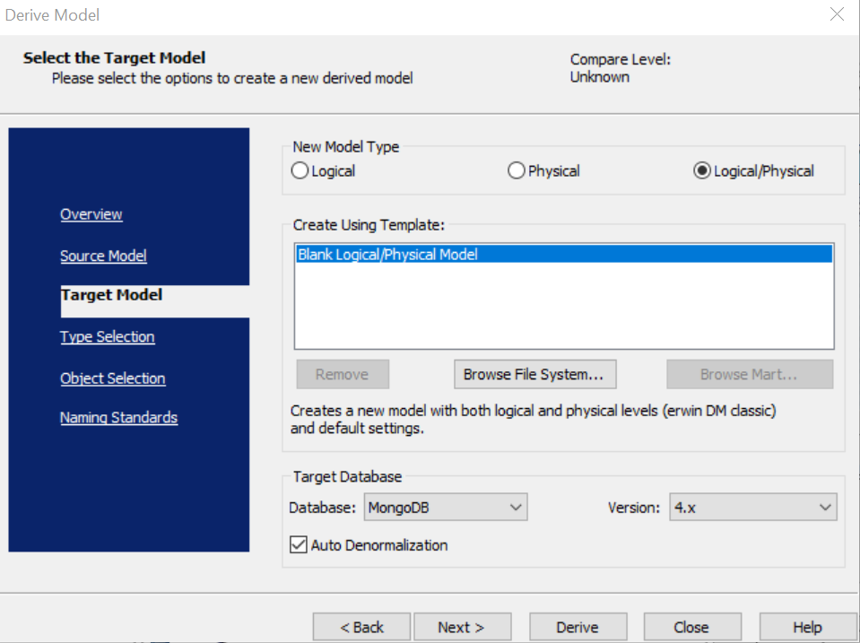

You can derive a new model from an existing model and transition from one design layer to another using the Derive Model Wizard Use the features in the Target Model section in the Derive Model wizard to select basic options for the derived model.
You can derive any models from relational to non-relational databases and vice-versa.
To derive a model, follow these steps:
The Derive Model wizard appears and displays the Target Model section.

Select a model type that you want to derive. Specifies whether the derived model is Logical, Physical, or Logical/Physical.
Specifies the template on which to base your new model. Click Browse File System or Browse Mart to search for an existing template, or skip this option and use the default blank model.
Select a target database and version. Specifies that the source model is derived into target model based on the selection.
When you derive a Cassandra model, the Advanced Denormalization check box appears. Select this option to access more denormalization options before deriving a Cassandra model. For more information, refer to Advanced Denormalization Options for Cassandra topic.
The source model is derived based on the selected target database and opens in a new window.
Alternatively, you can click Next to select more derive model options.
You can click Derive option any time after selecting a target database model in Target Model section.
The only limitation is that when you derive a non-relational (NoSql) model from logical model, you cannot import check constraints and default values in a logical model to the logical side of a logical/physical model.